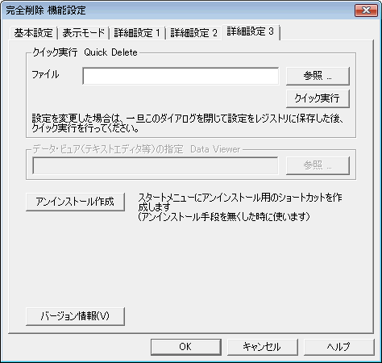

| 機能設定 ： 詳細設定３ |
|
| 機能設定 ： 詳細設定３ |
|

ファイルを１個ずつ指定して、完全削除処理を行います。
※
この設定ダイアログを開いてから変更したオプションは、レジストリに保存されていないため、削除処理には反映されません。
オプションを変更した場合は、一旦ダイアログを終了（ＯＫで閉じる）してから、再度クイック実行を利用してください。
スタートメニューにアンインストールのためのショートカットを作成します。アンインストール用のショートカットをなくした場合に使用します。